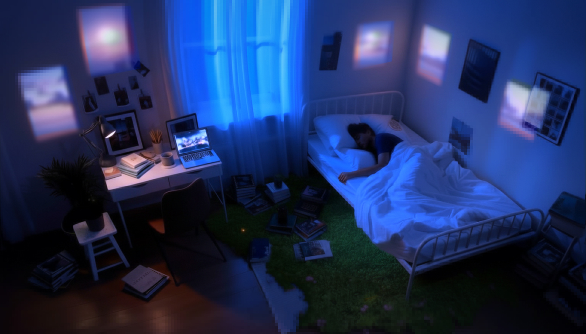

Repeat Without Return, 2026


Эта серия построена как последовательность изображений, которые воспринимаются как одно и то же место, хотя каждое из них снято в другой точке городского маршрута. На фотографиях запечатлены разные лестницы набережной, но повтор ракурса, дистанции и композиции создаёт ощущение, будто зритель сталкивается с одним и тем же фрагментом пространства снова и снова. Возникает опыт повторения без совпадения.
Подробнее
Лестница традиционно ассоциируется с переходом, движением, возможностью изменения уровня или состояния. В этой серии она сохраняет форму обещания, но утрачивает функцию завершённого перехода. Каждый кадр выглядит как попытка шага, который не приводит к выходу. Пространство не открывается — оно замыкается.
Повтор здесь не декоративный и не типологический. Он работает как механизм когнитивного застревания: зритель уверен, что уже видел это место, но не может доказать совпадение. Память начинает подменять факт. Различные точки города складываются в переживание одного и того же шага, который невозможно завершить.
Серия была снята в момент временного нарушения привычного порядка пространства. Доступ к этим ракурсам оказался возможным лишь на короткий период — когда поверхность воды превратилась в твёрдую среду и позволила занять позицию, обычно недоступную. Это временное изменение среды не становится сюжетом работы, но определяет её логику: переход существует только как кратковременная возможность, которая затем исчезает.
Здесь нет цифрового вмешательства, искусственных искажений или визуального эффекта «сбоя». Сбой возникает внутри самого восприятия. Разные места выглядят одинаково. Пространство симулирует знакомость. Маршрут обещает продвижение, но каждый раз возвращает к исходной точке.
Render Error: Reality, 2025


Кадры из видео. Полная версия по запросу — Telegram или email.
Render Error: Reality исследует человеческое восприятие в момент, когда реальность всё чаще переживается через экран как через посредника. Экран в работе функционирует не как нейтральное окно, а как активный механизм отбора, фильтрации и конструирования видимого — пространство, в котором ощущение устойчивости постоянно подрывается.
Подробнее
Экранный мир здесь не является альтернативой реальности, а представляет собой её управляемую поверхность: визуальный слой, скрывающий зоны ошибок, сбоев и незавершённости. Экранное окно становится рамкой, отделяющей «здесь» от «там», задавая границы того, что мы способны видеть и того, что нам позволяют видеть. Экран перестаёт быть порталом в «лучшую жизнь» и раскрывается как механизм формирования видимого.
Глитч в работе не выступает эффектом или поломкой, а становится моментом проявления самого процесса формирования образа — точкой, в которой контроль ослабевает, а напряжение становится различимым.
Работа не противопоставляет цифровое и материальное, а исследует состояние амбивалентности, возникающее между ними вследствие нарастающей тревоги. Эта амбивалентность формирует замкнутый цикл, в котором одно постоянно порождает другое. Цифровое пространство в работе существует как область непрерывного морфогенеза: оно никогда не стабильно и постоянно собирается из шума, света и алгоритмических догадок.
Таким образом, мир в Render Error: Reality предстает как непрерывный процесс становления и утраты, отражающий опыт экзистенциальной тревоги, связанной с невозможностью остановки, окончательного выбора и фиксации точки опоры.